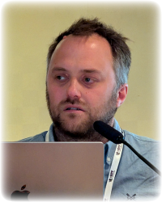

Providing 64KB base pages with 4KB kernels, two different ways
Per-process page sizes
Using 64KB pages improves performance, but doing so can also create internal fragmentation and a significant amount of wasted memory. That memory-use price tends to limit the use of larger base-page sizes. Ryan Roberts and Dev Jain (remotely) presented a plan to enable the running of processes with page sizes that differ from that of the system as a whole, in an attempt to get the best of both worlds.
random selection of
benchmarks
", a performance improvement of 2-17% can be had with a
larger page size. But the associated memory usage increase pushes people
to stay with the the standard 4KB page size supported by many
architectures. The contiguous-PTE support found in some recent processors
(where physically contiguous pages can share a translation lookaside buffer
(TLB) entry) helps a bit, but even using that feature, the performance gap
remains.
There are a number of reasons for the performance difference. On the software side, a larger page size equates to fewer page faults and shorter least-recently-used (LRU) lists in the kernel. On the hardware side, larger pages lead to better TLB use; a system running with 64KB pages can cover 16 times the memory area with the TLB. Arm CPUs can cache the results of the last page-table walk, speeding the translations of addresses that land within the same page-table entry (PTE) page; larger page sizes increase the coverage of that cache. Using larger pages also just makes the page tables more compact, reducing their TLB and cache impact.
There is architecture-level work aimed at closing the performance gap, Roberts said, but the results of that work will not be available for some years yet. So there is reason to explore what can be done on the software side instead. One possibility is to give each process its own page size, so that processes that benefit from larger pages can have them without imposing higher memory use on the system as a whole. The Arm architecture, in particular, supports this concept, allowing the kernel to remain with a 4KB page size while letting individual processes run with larger pages.
Jain took over to describe the proposed implementation, which is split into three layers. The first of those, the "ABI adaptor", is designed to hide the difference between the kernel's page size and that of any given process. Each process's page size is stored in the mm_struct structure; it is preserved when a process forks, but may be changed by an execve() call. Various system calls (mmap(), for example) will modify length and alignment parameters to match the kernel's page size. That work is fairly straightforward, Jain said, but ioctl() calls can require more care. The ELF loader is enhanced to understand the alignment needs of processes with different page sizes. There is a fair amount of trickery added to the implementation of various /proc files so that a process running with 64KB pages sees the results that would come from a 64KB kernel.
The second layer is a set of modifications to the kernel's memory-management subsystem. It turns out that a lot of the code paths used to implement transparent huge pages can be reused to provide 64KB pages, on a 4KB kernel, to processes using the larger page size. For such processes, allocation requests specify the page size as the minimum acceptable allocation size; larger pages, up to the PMD-level huge-page size, remain possible.
The page cache presents challenges of its own, since it is shared by all processes in the system. One option would be to just use 64KB folios there all the time, but that would waste quite a bit of memory when caching small files. So the page cache still uses 4KB pages most of the time. Should a 64KB process map a file with mmap(), all 4KB folios from that file will be dropped from the page cache, and any new folios will subsequently be added to the cache at the larger size.
Kiryl Shutsemau asked whether all filesystems support larger folios in the
page cache now; Matthew Wilcox answered in the negative, saying that some
filesystems are "lazy slackers
" that have not yet added that
support. The biggest problem, he said, is Btrfs. Wilcox suggested that,
as an alternative to dropping page-cache entries, the kernel could go ahead
and use 64KB folios as long as they do not extend past the end of the file.
Lorenzo Stoakes said that this work looks rather invasive, and wondered why it was not possible to just make greater use of multi-size transparent huge pages (mTHPs), which can provide a number of the same benefits. Roberts answered that mTHPs do not provide all of the hardware-level benefits that a larger page size does. Stoakes also worried that extensive use of larger page sizes could put a lot of pressure on the memory-management subsystem's compaction code.
Time was running short, so Roberts skipped over some of the intended discussion (including the third layer, which is the architecture-specific code that handles differently sized page tables) and moved directly to a list of open items. The first of those had to do with what happens if the kernel attempts an operation requiring a 4KB page size while running in the context of a 64KB process. One option would be to have the process fall back to 4KB pages; that would provide functional correctness, but would lose performance. The alternative is to fail the operation; this idea seems simpler, but would require sprinkling a lot of page-size checks throughout the kernel, Roberts said.
User-space ABI compatibility is a challenge; the kernel can pretend to be running with 64KB pages when queried by a 64KB process, but it will never be able to emulate everything. Some /proc files, for example, simply cannot hide the fact that the kernel is using 4KB pages. It is also not possible for /proc/PID/pagemap to represent a 4KB process when read by a 64KB process. There are also some system calls and other features (userfaultfd(), for example) that cannot be emulated.
One way to deal with these problems, Roberts said, would be to "defeature" 64KB processes, limiting their functionality. Processes with different page sizes would be invisible to each other, and processes with page sizes larger than the kernel's would be unable to use features like userfaultfd(). Any operation that cannot be properly represented to a 64KB process would simply fail.
Roberts concluded that saying that, while allowing processes to have different page sizes brings benefits, there are some sticky points as well. Adding this feature would also bring a fair amount of churn to the memory-management subsystem. Those benefits may well be worth the trouble, though.
A 64KB base-page size for x86
Using larger base pages can be a nice solution for workloads that benefit from them, but there is one little problem: some minor architectures, including x86, do not support running with larger base-page sizes. In the next session, Shutsemau proposed a way to work around this limitation on x86 systems. The idea was met with a certain amount of skepticism by the assembled developers, though.
Using 64KB base pages, Shutsemau began, can provide a 1.7% performance
improvement on "a very important workload
" on Arm processors; he
would like to bring that speedup to x86 systems as well. Using larger
pages would reduce the memory overhead of the system memory map, allow for
easy (and performance-improving) TLB coalescing, faster I/O operations, and easier allocations of 1GB huge
pages. Doing so, he said, requires splitting the kernel's concept of the
system page size in two.
Currently, the PAGE_SIZE macro is used throughout the kernel to represent the hardware's base-page size. Shutsemau would phase that out, in favor of PTE_SIZE, which describes the hardware's view of the base-page size, and PG_SIZE, which is the size of pages as they are managed within the kernel (and seen by user space). The PAGE_SIZE macro would only be defined at all if PTE_SIZE and PG_SIZE are equal. Page-frame numbers, he said, would always refer to PTE_SIZE frames.
Needless to say, there are a lot of places in the kernel that would have to change to reflect this new view of the world. Creating page-table entries would become more complicated, since the offset within the (PG_SIZE) page would have to be taken into account; all of the functions that deal with PTEs would gain a new offset parameter. While the kernel is managing 64KB pages, user space would still see the page size as being 4KB, as always. So there would be no user-space changes required to run successfully on such a system.
The most challenging part, Shutsemau said, is page-fault handling, since multiple PTEs would have to be mapped for each faulting page. User space would only be held to a 4KB alignment requirement, meaning that virtual memory areas (VMAs) could begin or end in the middle of a 64KB page. The page-fault handler might, as a result, end up only mapping part of a page when a fault happens; in such cases, the unmapped part of the page would simply be wasted. Misaligned pages could also lead to memory waste.
Wilcox said that copy-on-write (COW) faults would become more expensive on these systems, since they would have to fault in surrounding base pages to fill out a 64KB page. David Hildenbrand, instead, worried about how userfaultfd() could be implemented; it might need a new operation to install a single PTE rather than a whole page.
Hildenbrand also suggested it might be better to just go to a 64KB page size throughout the system; that would make life easier for everybody, he said. That, Shutsemau answered, would really just have the effect of shifting the complexity to the architecture code, which would have to implement the fiction of a larger base-page size and hide the details from the rest of the kernel. Going to a larger base-page size would also break some applications. Hildenbrand was unsympathetic to the latter point, saying that such applications should either be fixed or just be run on 4KB systems.
Jason Gunthorpe said that there has been a lot of experience with 64KB page sizes on Arm systems. Users tend to push back, he said, because there is always one special application that can only run with 4KB pages. Another participant asked why this complexity was needed when the kernel has support for mTHPs that is getting better over time. Part of the problem with that idea, Shutsemau said, is that not all filesystems support larger folios. Sticking with a small base-page size also makes it harder for the system to allocate larger chunks of memory.
On the topic of memory waste, Hildenbrand suggested the possibility of creating "negative-order folios" to represent sub-page chunks of memory. The idea of using the slab allocator for sub-page allocations was also suggested, but that would not work in all cases.
As the session ran low on time, Shutsemau acknowledged that he was not
seeing a lot of enthusiasm for his proposal. He asked what the fundamental
objections were. Hildenbrand answered that, in current kernels, an
order-zero folio is a single page; changing that understanding would entail
a significant change in how folios are handled. He asked for a cleaner
way, one that requires no "weird part-of-page interfaces
" to reach
the desired objectives.
Gunthorpe said that the fundamental constraint is that there has to be a
way to run old applications that require a 4KB page size. It would be
better to find a way to solve that problem, with minimal kernel
disturbance, on systems with a larger base-page size. The session closed
with Hildenbrand saying that other work in the kernel is addressing many of
the motivations behind Shutsemau's proposed changes. Given that, he
suggested, 64KB base pages may not be the future; the right path may be
better optimizing the operation of systems with 4KB pages.
| Index entries for this article | |
|---|---|
| Kernel | Memory management/Scalability |
| Conference | Storage, Filesystem, Memory-Management and BPF Summit/2026 |
Posted May 11, 2026 15:27 UTC (Mon)
by david.hildenbrand (subscriber, #108299)
[Link] (3 responses)
I'm afraid that wasn't me ... unless I was daydreaming. I guess the idea was to use the order field as a bitmap, but I cannot immediately tell if that is really feasible as I also don't remember the details of that comment.
Posted May 11, 2026 21:10 UTC (Mon)
by willy (subscriber, #9762)
[Link] (1 responses)
https://lore.kernel.org/linux-mm/afIYFtL6KrBs38rT@casper....
but I wouldn't propose a negative order folio for a couple of reasons. I understand why our overworked scribe recorded it that way though; I'm sure my spoken words weren't perfectly clear.
First, folios are always >= PAGE_SIZE. As long as we want to be able to mmap things, they have to be PAGE_SIZE.
Second, allowing negative orders to the page allocator could never be more than a hack. That's just an unreasonable mental workload to any user. Instead, introduce a new interface that allows allocation of memory in units of 512 (rather than units of PAGE_SIZE) and reimplement alloc_page() as a wrapper around it.
Posted Jun 9, 2026 0:46 UTC (Tue)
by nyc (guest, #91222)
[Link]
However, there is a notion of trading off some internal fragmentation to reduce the assembly ratio for the first superpage size for superpage size spectra with a wide gap between their base page size and their first superpage size. Using such an increased allocation unit (PAGE_SIZE) distinct from the TLB/MMU base page size (MMUPAGE_SIZE) also has a benefit of guaranteeing that smaller superpage size allocations won't fail from external fragmentation for architectures with dense superpage size spectra. There are also algorithms for maintaining ABI compatibility, likely originally due to Hugh Dickins, that beyond avoiding breaking ABI, also allow the allocation unit size to be compile-time configurable (or boot-time).
Depending on what people think the value of doing that is relative to the code to do it, it could be worth considering. I may even have something for it (hopefully Hugh will think I did his code and/or algorithms justice) that passes LTP on 16 architectures in qemu for PAGE_MMUSHIFT values of 0, 2, 4 and 6 (here PAGE_SHIFT == MMUPAGE_SHIFT + PAGE_MMUSHIFT).
Posted Jun 8, 2026 23:23 UTC (Mon)
by nyc (guest, #91222)
[Link]
Posted May 11, 2026 19:25 UTC (Mon)
by DemiMarie (subscriber, #164188)
[Link] (3 responses)
Posted May 11, 2026 20:48 UTC (Mon)
by mathstuf (subscriber, #69389)
[Link] (1 responses)
Posted May 12, 2026 16:58 UTC (Tue)
by k3ninho (subscriber, #50375)
[Link]
K3n.
Posted May 14, 2026 0:12 UTC (Thu)
by notriddle (subscriber, #130608)
[Link]
Posted May 11, 2026 21:38 UTC (Mon)
by PeeWee (subscriber, #175777)
[Link] (6 responses)
negative-order folios
> folios" to represent sub-page chunks of memory. The idea of
> using the slab allocator for sub-page allocations was also suggested,
> but that would not work in all cases.
negative-order folios
negative-order folios
negative-order folios
Toss legacy stuff to VMs?
Toss legacy stuff to VMs?
Toss legacy stuff to VMs?
Toss legacy stuff to VMs?
Are 1.7% really worth it?
Using 64KB base pages, Shutsemau began, can provide a 1.7% performance improvement on "a very important workload" on Arm processors; he would like to bring that speedup to x86 systems as well.
Given all the ifs and buts that followed, according to this article, I cannot help but wonder if it's really worth it, especially when the performance improvement is only part of the equation; the other being internal fragmentation / memory waste. I think, at some point, one needs to ask, how many instances of such an "important workload" could be run with 4K pages vs. 64K pages. If one can run 100 instances with 4K pages without swapping but only 80 with 64K, due to underutilized pages, that's a net loss; assuming perfect scalability with instance count, of course. What about other workloads that need to coexist on such systems? If any of them need to make do with less available memory, that goes to the cost side of the balance sheet.
Posted May 12, 2026 3:19 UTC (Tue)
by koverstreet (subscriber, #4296)
[Link]
It's just that not all code has been converted to use them, and besides btrfs the last I heard was anonymous memory seemed to be stalled.
Posted May 12, 2026 8:35 UTC (Tue)
by linusw (subscriber, #40300)
[Link]
Posted May 13, 2026 8:20 UTC (Wed)
by joib (subscriber, #8541)
[Link]
As for the size of this new base page, IIRC some newer x86 CPU's have "contiguous PTE" support for 8 consecutive pages, or 32kB, so maybe that would be a sweet spot?
Posted May 15, 2026 17:24 UTC (Fri)
by anton (subscriber, #25547)
[Link] (1 responses)
L1 TLBs are as small as they are because making them larger also means that they are slower, and at some point the L1 cache access speed is limited by TLB speed. For highly or fully associative structures (as is often the case for L1 TLBs), power consumption is also an issue.
Posted Jul 18, 2026 21:30 UTC (Sat)
by nyc (guest, #91222)
[Link]
Posted Jun 9, 2026 1:05 UTC (Tue)
by nyc (guest, #91222)
[Link]
Some consumer-oriented vendors defeat the entire point of superpages by having fixed numbers of TLB entries for each translation size. Clearly such TLBs have the amount of memory they can map set in stone regardless of any kernel or userspace behaviour, apart from deliberately pessimally refusing to use some translation sizes.
So it's not just that TLBs are too small. They're also often not organised in ways that would allow kernels and userspace to make the most effective use of them.
Are 1.7% really worth it?
Are 1.7% really worth it?
https://lore.kernel.org/linux-mm/da9321ad-4198-494e-b9fa-...
Are 1.7% really worth it?
I made some measurements of how much internal fragmentation would grow with various page sizes and posted it on Usenet <2020Oct9.190337@mips.complang.tuwien.ac.at> Given that I no longer know a working Usenet archive, I just repost this work here:
Internal fragmentation
I use the following script:
cat /proc/[1-9]*/maps|
awk '$2~/.w.p/||!$2":"$6 in m {m[$2":"$6]=1; print $1" swap - doit"}'|
sed 's/-/ /'|
gforth -e 'variable mem create ps $2000 , $4000 , $8000 , $10000 , create sums 0 , 0 , 0 , 0 , : doit 4 0 do dup ps i th @ naligned over - sums i th +! loop mem +! ; hex stdin include-file decimal : printit mem @ $400 / 8 .r 4 0 do sums i th @ $400 / 8 .r loop ; printit cr bye'
On my desktop this outputs the second of the following lines:
total 8KB 16KB 32KB 64KB
1040972 6676 22244 56148 124788
The 8KB column tells how many extra KB would be used if the page size
was 8KB. Comparing total memory as determined by this script to the
output of free (555900 without buffers/cache) indicates that, on
average, only about half of the address space in a VMA is consumes
memory; so there is also quite a bit of uncertainty about my estimates
for extra memory.
For the three machines above [desktop (2h uptime, spartan user interface);
laptop (54d uptime, Ubuntu, Gnome, 2 users); server (89d uptime, Debian,
Gitlab and Jitsi in Docker)], I get today (numbers in KB):
VMAs unique used total 8KB 16KB 32KB 64KB
7552 2333 555964 1033320 6704 22344 56344 125144 desktop
82836 25276 5346060 15707448 76072 223000 514472 1113672 laptop
47017 15425 105490636 60186068 40804 134492 319852 708588 server
I have no explanation why used is higher than total on the server.
If you want to get an average VMA size, just divide total by unique.
In any case, even with the considerable uncertainty from partially
populated VMAs, the extra cost of 8KB or 16KB pages does not appear to
be large, even on the laptop.
At current RAM prices, not everybody will want to spend an extra 1.1GB on 64KB pages for internal fragmentation, but having the option would be nice, and having some in-between option, too.
Internal fragmentation
Are 1.7% really worth it?